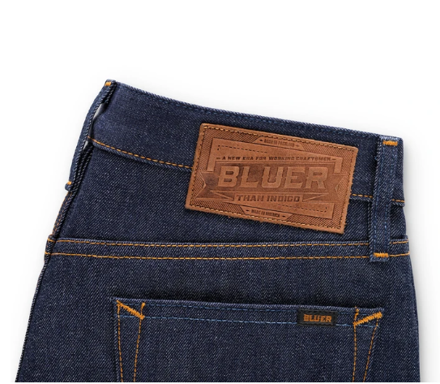
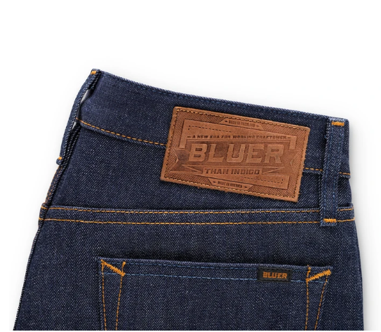

Denim sustainability is an approach aimed at managing the stages of the product's existence in order to minimize any negative impact on the environment.
Sustainability is quickly becoming a global focus, and this include the fashion industry. In as much as everyone feels contented with denim clothing, there is also need to shift our attention to how these materials are produced and their potential impact on the environment. Doing this will help us protect our very own planet that we know today.
The following pictures are some of the finished varieties of denim. Clicking on any of the pictures will take you to the store where they are sold.

 

It is known that the clothing industry has one of the highest impacts on the environment. With no exception, jeans are ranked as one of the least eco-friendly items of clothing to manufacture.